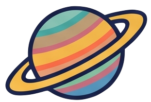
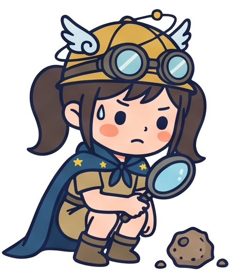
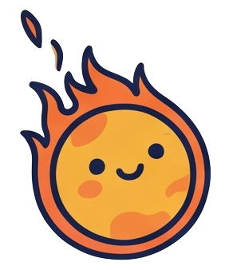

從星塵、海洋到生命，探索 46 億年的地球故事

將宇宙 138 億年大歷史與地球 46 億年地質時序編織為宏觀演化坐標 (Ga: 十億年 / Ma: 百萬年)
創生與地核成形
無氧還原與早期生命
氧氣革命與環境劇變
板塊變遷與生命爆發
46 億年前，原始太陽系星雲在動態熱梯度下的碰撞與凝結
在太陽熱輻射梯度下，距日 1.0 AU 處溫度高達數百至上千度，水、氨等揮發分無法凝結，僅金屬（鐵、鎳）與矽酸鹽微塵得以固化。
微米級塵埃在氣體阻尼下沉降至星雲盤赤道面，經凡得瓦力與局部重力擾動黏合，聚集成千米級「微行星 (Planetesimals)」。
天體愈大引力截面積愈大，迅速吞噬周圍碎塊長成火星大小之原行星，最終在交叉軌道的大碰撞中奠定原始地球。
地球自身的地表岩石因活躍的板塊運動與風化侵蝕，早已找不到創生初期的原始地殼。科學家如何精準定年？
約 45 億年前的斜向毀滅碰撞，為地球帶來了獨一無二的大型衛星守護者
46~35 億年前，動能熱與放射熱熔融地球，重力驅動內部核、函、殼三層圈分立
➔ 全球熔融形成深達數千公里的「岩漿海 (Magma Ocean)」。
人類無法直接鑽探地函，透過地震波在固態與液態介質的折射衰減解碼地球深部
| 特性指標 | P波 (壓縮波 / 縱波) | S波 (剪切波 / 橫波) |
|---|---|---|
| 振動方向 | 質點平行波前進方向 | 質點垂直波前進方向 |
| 傳播介質 | 固體、液體、氣體皆可 | 僅限固體 (剪切模量>0) |
| 波速 | 較快 (~6 - 13 km/s) | 較慢 (~3.5 - 7 km/s) |
| 地質意義 | 探測介質密度與壓縮性突變 | S波中斷為液態介質之鐵證 |

原始氫氦被 T-Tauri 太陽風吹蝕殆盡，火山去氣作用奠定今日流體圈基礎
原恆星太陽爆發極強的 金牛座 T 型星風暴 (T-Tauri Solar Wind)，吹散內行星原始氫氦包層，迫使地球必須依靠內部排氣重新建立「次生大氣」。
微行星撞擊與劇烈火山噴發釋出地函揮發分，成分序列為：
H₂O > CO₂ > SO₂ > Cl / HCl > N₂。
地表冷卻後水蒸氣成雲降雨，沉降形成原始海洋。雨水溶解巨量酸性 CO₂ 與 SO₂，化學惰性且水溶性極低的 N₂ 逐漸留存成為大氣主體 (78%)。
地球之所以免於淪為金星煉獄，核心關鍵在於液態水海洋的存在：

缺氧環境是無機分子合成有機單體的溫床；硫光化學構築早期抗紫外線防護罩
生命重塑大氣圈：35 億年光合放氧，在 20 億年前終結無氧時代
岩石圈剛性板塊漂移於塑性軟流圈之上，主宰造山、地震與全球物質循環
洋殼板塊深潛脫水熔融，結晶分異淬煉花崗岩質「大陸地殼」
含水玄武岩洋殼 (MORB) 與飽含生源有機質之沉積物受板塊拉力滑入海溝隱沒帶。
板塊深潛加壓釋放熱水流體（H₂O、CO₂），向上交代地函楔橄欖岩，大幅降低岩石熔點 (Flux Melting) 產生原始岩漿。
岩漿在庫內結晶分異，提煉出富矽鋁 (Si-Al) 的花崗岩與安山岩質輕熔漿，永久浮於地表，造就了地球獨有的大陸地殼。
菲律賓海板塊每年 8.2 cm 擠壓歐亞大陸，世界上擠壓抬升最迅速的弧陸碰撞帶
| 1. 海岸山脈 | 呂宋火山島弧殘塊 (都巒山安山岩、利吉混同層) |
| 2. 花東縱谷 | 兩大板塊碰撞縫合帶 (Suture Zone)，斷層位移劇烈 |
| 3. 中央山脈 | 古老變質基盤大南澳雜岩、脊樑山脈變質砂岩與板岩 |
| 4. 雪山山脈 | 漸新世張裂盆地受擠壓反轉逆衝之厚層四稜砂岩帶 |
| 5. 西部麓山帶 | 新生代淺海砂頁岩，強烈褶皺逆衝斷層帶 (車籠埔斷層) |
| 6. 海岸平原 | 現代前陸沉積盆地，台南台地為盲斷層褶皺隆起 |
相同起點的火山去氣，因「日距位置」與「板塊運動」走向三個極端世界
失控溫室煉獄 (Runaway Greenhouse)
動態恆溫生機綠洲
大氣散逸與冰封荒漠
彼得·沃德《地球是孤獨的》：微生物可能普遍，但複雜多細胞生命極其罕見
只要具備液態水與基本化學能量梯度，單細胞原核生物極易在極端環境誕生。然而，從單細胞演化為多細胞動物與智慧文明，需要**一連串概率極低的天文與地質巧合長達 40 億年不中斷的完美疊加**。
從 46 億年前的星塵熔爐，到今天生機盎然的藍色星球
地函對流與板塊構造不斷撕裂、聚合大陸，在海溝與造山帶中重塑地貌。
液態外核發電機每分每秒旋轉維繫磁場，阻擋高能宇宙輻射。
海洋與大氣協同光合作用，調控 21% 氧氣與溫室效應平衡。
生命不再只是環境的被動適應者，而是徹底重構大氣圈與沉積岩的強大營力。